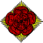
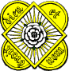
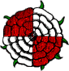
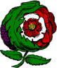
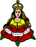
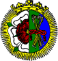
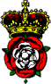

Rose, (fr. rose): this flower is very frequently employed in coats of arms, and more frequently still in badges. In the very ancient rolls, however, it is chiefly borne by branches of the one family of the D'ARCYS. The flower is not to be drawn with a stalk unless blazoned stalked, or slipped. The heraldic rose should consist of five foils as drawn in the example; though examples are to be found with six foils, and perhaps with four. The word proper applied to the barbs(of five leaves of the calyx) and central seeds, implies that the former are green, and the latter gold or yellow. A rose is the difference of the seventh house. Sometimes roses are arranged in a chaplet, q.v. and they are sometimes crowned.
Ermine, a rose gules, barbed and seeded proper--BEVERLEY, Yorkshire.
Philip DARCY, d'argent a trois roses de goules--Roll, temp. HEN. III.
Sire Robert DARCY, de argent a iij roses de goules od la bordure endente de sable--Roll, temp. ED. II.
Sire Johan DARCY, de argent a un escuchon de sable od les rosettes de goules assis en la manere de bordure--Ibid.
Sire Felyp DARCI, de argent a iij roses de goules--Roll, temp. ED. II.
Sire William de CONSINGTONE, de azure a iij roses de or--Ibid.
Monsire de ROSTLES, gules vi roses argent--Roll, temp. ED. III.
Argent, on a bend azure three roses of the first--CAREY, co. Oxford.
Or, a stag trippant azure on a chief of the last three roses argent--FRUID, Scotland.
Argent, a cross engrailed gules between four mullets azure, on a chief or three damask roses of the second seeded gold barbed vert--ALLGOOD, Nunwick, Northumberland.
Argent, a chevron sable between three roses gules slipped vert--Nicholas WEST, Bp of Ely, 1515-33.
Argent, on a fesse vert between three damask roses barbed and seeded proper four ermine spots of the field--WILLAUME, Tingrave, co. Bedford; granted 1767.
Argent, on a mount vert three heraldic roses gules stalked and leaved proper--Dr.PEARCE, Dean of ELy.
A double rose also occurs, that is one within another, and they are thus conjoined, either by placing a white rose upon a red one, or a red one upon a white. The term rosette is employed in one case where there are several.
Azure, a saltire argent charged in the centre with a double rose gules--OPPIN, Saxony.
Argent, a cross gules; in the dexter canton a dagger[probably meant for the sword of S.Paul] of the second; on a chief azure a double rose red and white barbed vert between two fleurs-de-lis or--CHRIST'S HOSPITAL, London.
Symon FRESEL, de cele gent Le ot noire à rosettes de argent
Roll of Carlaverock.
It will be seen also that rose branches, slips, and leaves are occasionally borne separately; and one early instance has been bserved in which the phrase '3 rosers' occurs.
Argent, two bars azure, over all a lion rampant or, holding in the dexter paw a rose branch gules--TUDMAN.
Argent, on a mount vert three rose sprigs, the roses gules, the leaves and stalks proper--ROSECREEG, Cornwall.
Argent, a rose and thistle conjoined paleways proper--ASHTON.
Or, a rose leaf in bend sinister vert--BENDLISE.
Gules, a chevron argent between three rose leaves of the second(another, or)--Sir John ROSE.
Le Counte de RAMPSUILE dor a treis rosers; sur chekune roser une rose; chekune roser verte--Roll, temp. HEN. III. (In another copy, possibly of the same original Roll, "Le Countee de RUMMESVILLE, dor trois roses [c]harges ove 3 roses vert.")
The use of the Rose as a political emblem may be traced to the wars between the rival Houses of York and Lancaster, the former of which used the device of a white rose, while a red one was the badge of the other, and these came to be blazoned occasionally as the Rose of York and Lancaster respectively. They are said to have been first assumed by John of Gaunt, Duke of Lancaster, and his brother Edmund, Duke of York. Both these roses were sometimes surrounded with rays, and termed en soleil, and later on they were frequently conjoined.
|  |  |  |
| The Rose of Lancaster. | The Rose of York. | The Tudor Rose. |
|  |  |
| Badge of Katherine of ARRAGON. | Badge of Katherine PARR. |
|  |  |
| Badge of QUEEN MARY. | Badge of CHARLES I. |
{kind=link}
{kind=link}
{kind=link}
{kind=link}
{kind=link}
{kind=link}
{kind=link}